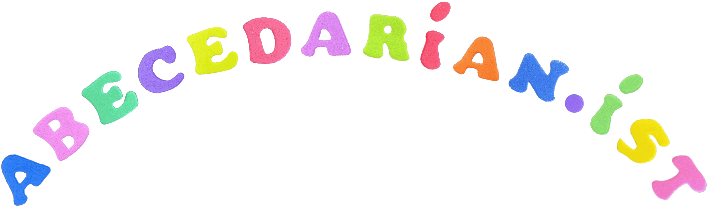

P
o
e
m
s
黄浦黄浦!
Richmond Park
Saturday in Shanghai
στὸν ἔρωτα δοθῆκαν
'Charlotte the Harlot'
Iconoclast's refrain
Three Poems for Yuan
Novel Phenomena
Ulysses
(Frag.)
'O God, Thou Final Poet'
'bluegray bath and my yellow limbs'
É
t
u
d
e
s
Sonnets
Cleriwhats
&
Cleriwhose?
T
r
a
n
s
l
a
t
i
o
n
s
On the assembly line I twist screws
周启早 我在流水线上拧螺丝
'Nation's broke, nature still survives'
杜甫 春望